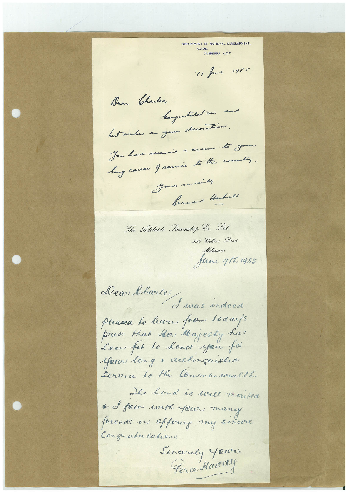

Book 1 · scan 140


Description
Transcription
Context
Review notes
Compare the machine draft with the scan. Handwriting and names need human review.
Artifacts
Edit the artifacts field in this note’s frontmatter to change these records. This summary is generated.
B01-S140-A01 — Letter & Handwritten note — Book 1, scan 140
Types: Letter, Handwritten note
Scope: Whole scanned page; individual items can be split out during review.
Caption: Not mapped yet.
Caption source: Not recorded yet.
Caption status: unmapped
Machine transcription
DEPARTMENT OF NATIONAL DEVELOPMENT. ACTON. CANBERRA A.C.T. '11 fame 1955 Dear thales, hagustlation and Lust indes an you contin. You have newis a crown to your long caver greenis to the comman. шиль Joun a Bernard Hankill The Adelaide Seamship Ca. Lid. 505 Collins Street Melbourno June q1L1955 Dear bartes S was indeed pleasea to hearn from leaaris press that Ider Majesky hat Seen fat to honor you par Your long a dishinguished Service lo the Commonwealth She hond is wall merited • d fein with your many rends in affoung my sincere Conguanulation. Sencerely yours Perce Maddy